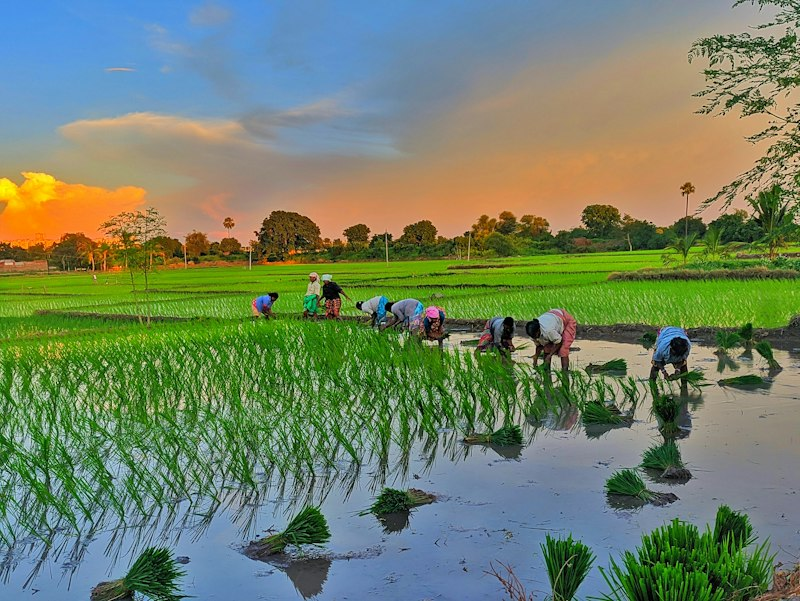

Alternative Dispute Resolution (ADR), Mediation & Peace Accords
CLD Kenya operates accredited community mediation hubs that resolve inter-ethnic disputes, customary land boundaries, and pastoralist raids. We harmonize Kenya's judicial Alternative Dispute Resolution (ADR) framework with traditional African dispute mechanisms (Council of Elders, Modogashe Declarations, and Peace Barazas) to deliver binding, community-owned peace pacts.

Resource Conflict Mitigation & Shared Peace Water (WASH)
Water scarcity is the single largest trigger of armed skirmishes along Kenya's arid corridors (Turkana, Samburu, Baringo, Isiolo). When CLD brokers a ceasefire, we anchor the peace treaty by building Co-Managed Solar Peace Water Kiosks and sand dams located on neutral border corridors, jointly owned by water committees from both previously warring communities.
Urban Gang Mediation & Youth De-Radicalization Hubs
In Nairobi's informal settlements (Mathare, Kibera, Mukuru, Dandora), economic hopelessness drives youth into criminal gangs, political violence, and ethnic militia groups. CLD street mediators negotiate turf ceasefires, disarm gang hostilities, and immediately enroll ex-combatants into our Nairobi Youth Digital Academy for certified training in remote ICT freelancing, solar installation, and cooperative agribusiness.


Women Peace Mediators & Post-Conflict Economic Chamas
Women and children bear the greatest brunt of armed conflict yet are traditionally excluded from patriarchal elder peace councils. In accordance with UN Security Council Resolution 1325, CLD trains female peace monitors, equips women with negotiation skills, and establishes Revolving Peace Seed Funds for chamas composed of conflict widows, single mothers, and survivors.
Pastoralist Grazing Accords & Climate-Smart Farming
Drought drives cattle herders across ancestral boundaries into agricultural zones, causing deadly clashes between herders and farmers. CLD brokers seasonal Rangeland Sharing Treaties, introduces drought-resilient fodder banks (Cenchrus ciliaris grass reseeding), and trains communities in sack farming and drip irrigation to guarantee household food security without violence.


Conflict Early Warning (EWER), Land Rights & Policy
We operate community-level Early Warning Early Response (EWER) mechanisms using rapid SMS reporting and radio listening clubs. We track hate speech, cattle movement triggers, and election-cycle tension. Partnering with the National Cohesion and Integration Commission (NCIC) and the National Steering Committee on Peacebuilding (NSC), we de-escalate flashpoints before blood is shed.